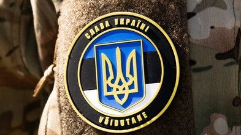

Världen
Delvis obekräftat2 800 soldater från elva länder övar i Polen för en framtida fredsstyrka i Ukraina

Den 9–22 november övar omkring 2 800 soldater från elva länder i sydöstra Polen. Övningen heter Koalicja och är den första stora övningen för den multinationella styrka för Ukraina som Storbritannien och Frankrike leder, och som är tänkt att hjälpa till att säkra en varaktig fred när striderna har upphört. Omkring 300 brittiska soldater och brittiska stridsflygplan deltar, och Estland är ett av de andra länderna.
Medan diplomaterna förbereder nästa veckas samtal i Abu Dhabi övar en europeisk koalition för vad som ska hända efter ett eventuellt eldupphör. Övningen Koalicja i Polen är den första stora övningen för den multinationella styrka för Ukraina som Storbritannien och Frankrike leder.
Vad som ska övas
Storbritanniens försvarsministerium skriver att hundratals brittiska soldater och flygplan från flygvapnet RAF ansluter till tio andra länder i Polen för övningen, och att den ska stärka beredskapen att stödja en varaktig fred i Ukraina. Även Estlands försvarsministerium bekräftar att estniska styrkor deltar. Enligt flera samstämmiga konton, bland dem Maks och ELMObrokenWings, deltar omkring 2 800 soldater från elva länder mellan den 9 och 22 november, och de ska öva hur freden kan säkras när striderna har upphört.
Bering Report uppger att övningen hålls i sydöstra Polen och att Storbritannien bidrar med omkring 300 soldater och Typhoon-plan. Journalisten Antonello Guerrera beskriver det som den första stora övningen för den brittisk-franskledda styrkan.
Får skjuta tillbaka
Enligt Sky News, så som det återges på X, kommer brittiska soldater i en framtida insats att få skjuta tillbaka mot ryska styrkor om de angrips. Det är den del av nyheten som väcker mest känslor. En kritisk röst ser övningen som ett steg mot upptrappning, medan andra påpekar att det handlar om en övning och inte om en utplacering. ”Det är ingen utplacering, det är en övning”, svarar en användare den som påstod något annat.
Så vet vi det
Källmix: 9 källor – 2 primärkälla, 1 analys, 1 journalist, 1 etablerad media, 4 debattör. Etablerad media utgör 1 av 9.
- Primärkälla Storbritanniens försvarsministerium: brittiska soldater och flygplan till Koalicja i Polen
- Primärkälla Estlands försvarsministerium: Estland deltar i övningen
- Journalist Antonello Guerrera om den brittisk-franska styrkans första stora övning
- Analys Bering Report: omkring 300 brittiska soldater och Typhoon-plan i sydöstra Polen
- Debattör Maks: övningen ska öva hur freden säkras när striderna är över
- Debattör Återgivning av antal soldater och länder
- Etablerad media Sky News, som det återges på X: brittiska soldater får skjuta tillbaka om de angrips
- Debattör Svar till dem som kallar det en utplacering: det är en övning
- Debattör Kritisk röst som varnar för upptrappning
Att övningen äger rum och att den gäller den brittisk-franskledda styrkan för Ukraina bekräftas av Storbritanniens och Estlands försvarsministerier. Antalet soldater, länder och datum kommer från flera samstämmiga konton, men vi har inte sett dem i det brittiska ministeriets eget inlägg. Uppgiften att brittiska soldater får skjuta tillbaka om de angrips kommer från Sky News så som den återges på X.
Fördjupa
Frågorna öppnar Grok i en ny flik med artikeln som underlag. AI-svar kan innehålla fel, så kontrollera mot källorna.
- Vad är den multinationella styrkan för Ukraina och vilka länder ingår? ↗
- Under vilka villkor skulle en sådan styrka skickas till Ukraina? ↗
- Hur har Ryssland reagerat på planerna på europeiska soldater i Ukraina? ↗
- Varför hålls övningen i just sydöstra Polen? ↗
- Deltar Sverige eller andra nordiska länder i planeringen av styrkan? ↗
Uppdateringslogg
- 03/11 19:25 – Artikeln publicerad.